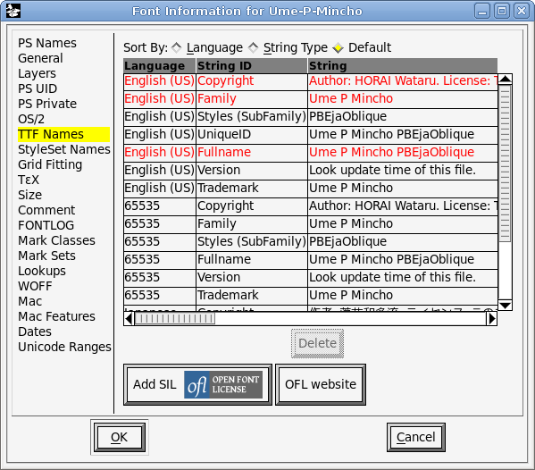

4. fontforge を使って斜体の梅フォントを生成する
ここではライセンス問題を気にして、IPA フォントの斜体ではなく梅フォントの斜体を生成します。手順は、IPA フォントの場合もほぼ同じです。
4.1 梅フォントの入手
http://sourceforge.jp/projects/ume-font/releases/ からダウンロードします。堀内が最後に見たときは、egf-umefont_446.7z が最新でした。
4.2 ベースにするフォント
- 明朝体
- ume-pgo4.ttf
- ゴシック体
- ume-pmo3.ttf
4.3 Windows で fontforge を使う上での注意
Windows の fontforge は多言語化に失敗しているようで、UI の文字がほとんど読み取れません。今のところわかっている対策は、Windows の言語設定を英語にすることです。Windows Vista の場合、コントロールパネル → 時計、言語、および地域 → 地域と言語のオプション → 現在の形式: 英語 (米国)。
警告: 堀内はこの言語設定を行ったことにより、個人設定とシステム設定を一部壊してしまいました。Windows で fontforge を使う場合は、テンポラリーに権限の弱いユーザーを作って行うことを推奨します。
4.4 fontforge を操作する
4.4.1 すべての文字を選ぶ
Edit → Select → Select All
4.4.2 傾ける
Element → Transformations → Transform...

4.4.3 名前を変更する
フォントには、属性としていろいろな名前がありますが、今回生成するのは非公式なバージョンなので、そのことを強調した名前付けを行うことにします。
Element → Font Info... → TTF Names で
- English (US) 以外の UniqueID、Family、Fullname、Styles (SubFamily) を削除する
- UniqueID を、‘pbejsm-ume’ とする (slanted mincho umefont)
- Styles (SubFamily) を ‘Slanted’ とする

Element → Font Info... → PS Names で、Fontname:、Family Name:、Name For Humans: に、先に入力した UniqueID と同じ文字列を設定する

Element → Font Info... → TTF Names が下図のとおりであることを確認する
4.4.4 フォントをエクスポートする
File → Generate Fonts...